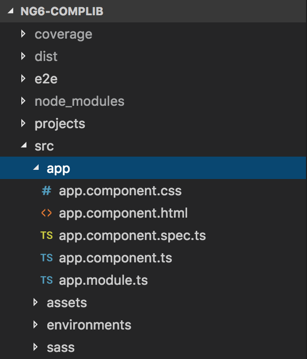
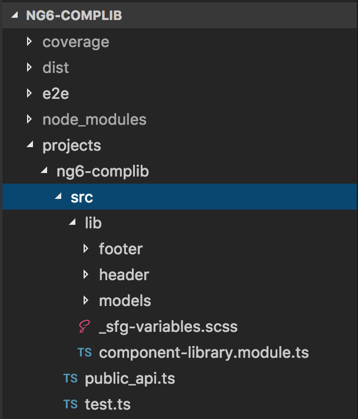

ngular
ngular
Component Libraries
before Angular v6 ... and after
presented by chris.raiskin
Who I am
- developer
- ton of Java b/e, APIs, middleware
- 2+ yrs of Angular
- have come to appreciate TypeScript
- switching between Java and Angular
What I do
- currently at Standard Insurance
- lead the "portal" team
- which
- has introduced Angular at Standard
- while migrating away from WebSphere portal
- has partnered with our UX team
- to ensure theme and style consistency
- across home-grown web apps
why component libraries?
- to achieve theme/style consistency,
- our goal was to distribute:
- common theme components (e.g. header and footer)
- that we could include into Angular template
It was a cold winter of 2016 ..

- Angular 4 just came out and
- angular/cli still had no library support..
Our options in 2016
Essentially, two:
- a fairly complex one that
- compiles the sources,
- inlines CSS and HTML, and
- runs Rollup.js to build UMD* and ES5 modules
- a relatively simple one that
- packages TypeScript sources, styles and assets, and
- publishes them to an NPM registry
Which option
was the right one for us in 2016?
Considering:
- our target audience:
- company-internal apps
- we went with option #2:
- publish sources, styles and assets to npm
pre-ng6 component library
- Objective:
- create an angular project
- containing sources, global styles and assets, and
- a wrapper component so we can
- test our library locally, and
- have a kitchen-sink view of library components
- eventually, we want to publish to NPM repo, and
- declare the library as dependency in any internal app
Step 1: Create a new project
- that will contain
- the library itself, and
- a test consumer for your library
$ ng new ng-complib --prefix sfg-complib
Step 2: create a new module
- The library will reside in its own module
$ ng g module component-library
Step 3: create library components
- create Header component
$ ng g c component-library/header
- create Footer component
$ ng g c component-library/footer
- and so on
Step 4: export your library components
- In your library module, export your components
component-library.module.ts
@NgModule({
providers: [ /* Don't add the services here */ ],
imports: [
CommonModule
],
declarations: [
HeaderComponent, <-- declare header
FooterComponent <-- declare footer
],
exports: [
HeaderComponent, <-- export header
FooterComponent <-- export footer
]
})
export class ComponentLibraryModule {
static forRoot() {
return {
ngModule: ComponentLibraryModule,
providers: [
// your provider services here
]
};
}
}
Step 4: rename your library's module.ts to index.ts
index.ts
$ mv component-library.module.ts index.ts
Here's what we have so far

Testing the library in wrapper project
- import component library module in app.module.ts
- add any global styles and assets to angular.json
which used to be .angular-cli.json
Import component library in app.module.ts
imports: [
BrowserModule,
RouterModule.forRoot(appRoutes),
ComponentLibraryModule.forRoot() <-- import lib module
],
Adding styles and assets to angular.json
"assets": [
"src/assets",
{
"glob": "**/*",
"input": "src/app/component-library/assets",
"output": "/assets"
},
"src/favicon.ico"
],
"styles": [
"src/app/component-library/sass/styles.scss"
],
Using library components in a wrapper component
App Component Content
all that's left is
$ ng serve
Great! Now what?
- so, we're testing the library in the same project
- big deal..
- now, let's test it in a different project
- eventually, we'll deploy it to an NPM repo
- for now, let's install this library as a dependency
- in another
consumer app that lives in the same filesystem.
Install the library in another project
$ cd ..
$ ng new ng-complib-consumer
$ npm install ../ng-complib/src/app/component-library
npm link, but this way is much simpler
add library-provided assets
edit .anglar-cli.json (or now angular.json)
to include library-provided assets:
"assets": [
"assets",
{
"glob": "**/*",
"input": "../node_modules/sfg-ng-complib/assets/",
"output": "./assets/"
},
"favicon.ico",
".htaccess"
],
add library-provided styles
Since we use SASS, edit src/sass/styles.scss to add
the following line at the top:
@import '~sfg-ng-complib/sass/styles';
Import the library module
- import component library module
- into consumer's
app.module.ts, and - use
sfg-brand-headerandsfg-brand-footer - in angular templates.
Publish to NPM repo
- Once ready for a release
- prepare to publish to internal NPM repo.
- In the library project, make sure that the library's
package.json - has the minimum required attributes, and execute:
$ npm publish
Library's package.json
{
"name": "sfg-ng-complib",
"version": "1.0.0-SNAPSHOT.7",
"description": "Common Angular application components",
"main": "index.ts",
"scripts": {},
"repository": {
"type": "git",
"url": ""
},
"keywords": [
"angular",
"components"
],
"author": "CORE Engineering",
"private": true,
"publishConfig": {
"registry": "https://nexus.company.com/repository/npm-internal"
},
"engines": {
"node": "8.9.3",
"npm": "5.6.0"
},
"dependencies": {},
"devDependencies": {}
}
Angular 6 component library
- Same Objectives:
- create angular project
- containing sources, global styles and assets..
- .. and a wrapper component so we can
- test our library locally, and
- have a kitchen-sink view of library components
- eventually, we want to publish to NPM repo, and
- declare the library as dependency in any internal app
ng6 workspaces - woah!
- Angular 6 introduces workspaces
- where you can have one or more projects
- so the default app will be the test app
- and we can
ng g library - to place the library code into the
projects folder
Step 1: Create ng6 workspace
The default app created will be our internal test consumer for the library:
$ ng new ng6-complib-test-app
Create
$ mv ng6-complib-test-app ng6-complib
generate the library
$ ng g library ng6-complib --prefix=sfg-complib
ng6 workspaces
default app and the projects folder:
 add components to the library
$ ng g c header --project=ng6-complib
$ ng g c footer --project=ng6-complib
Step 4: add components to lib module exports
@NgModule({
providers: [ /* none here */],
imports: [
CommonModule
],
declarations: [
HeaderComponent,
FooterComponent
],
exports: [
HeaderComponent,
FooterComponent
]
})
export class ComponentLibraryModule {
static forRoot() {
return {
ngModule: ComponentLibraryModule,
providers: [
// your library providers here
]
};
}
}
Step 5: ng-packagr entry file
- Angular Package Format defines a special file
public_api.ts - that declares the library's public interface
export * from './lib/header/header.component';
export * from './lib/footer/footer.component';
Step 6: build the libary
$ ng build --prod ng6-complib
always use
$ ng build --prod example-ng6-lib
Building Angular Package
Building entry point 'example-ng6-lib'
Rendering Stylesheets
Rendering Templates
Compiling TypeScript sources through ngc
Bundling to FESM2015
Bundling to FESM5
Bundling to UMD
Minifying UMD bundle
Copying declaration files
Writing package metadata
Removing scripts section in package.json as it's considered
a potential security vulnerability.
Built example-ng6-lib
Built Angular Package!
- from: /example-ng6-lib/projects/example-ng6-lib
- to: /example-ng6-lib/dist/example-ng6-lib
Test library in its own workspace
import component library into test app's
./src/app/app.module.ts
imports: [
BrowserModule,
RouterModule.forRoot(appRoutes),
ComponentLibraryModule.forRoot() <-- imports component library
],
Use in a template
test app's template:
./src/app/app.component.html
App Component Content
To use the library in another app
- build the library
$ ng build --prod ng6-complib
$ cd dist/ng6-complib
$ npm pack
$ npm publish ./dist/ng6-complib/ng6-complib-0.0.1.tgz
Import and use to taste
import into consumer app's root module:
imports: [
BrowserModule,
ComponentLibraryModule.forRoot(), <-- import component library
RouterModule.forRoot(appRoutes)
],
and use library components in a template:
App Component Content
TODO: support global styles
- no support for packaging global styles like:
"styles": [
"../node_modules/component-library/sass/styles.scss"
],
TODO: support global assets
- no support for global styles like:
"assets": [
"src/assets",
{
"glob": "**/*",
"input": "../node_modules/component-library/assets/",
"output": "./assets/"
}
],
Side by Side
| packing source code | ng-packagr based |
|---|---|
| still a simple, viable option | seems straight forward as well |
| company-internal only | meets UMD reqs for NPM dist |
| handles global assets/styles | as of ng6, no global asset/style support |
| requires lib code compatibility with consumer app | since compiled, should be more resilient to version changes |
Thank you!
pre-ng6 library demo
https://github.com/chrisraiskin/ng-complib
ng6 library demo
https://github.com/chrisraiskin/ng6-complib
Presentation: